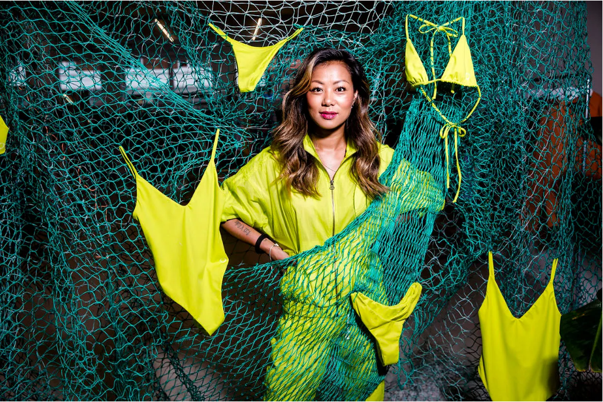
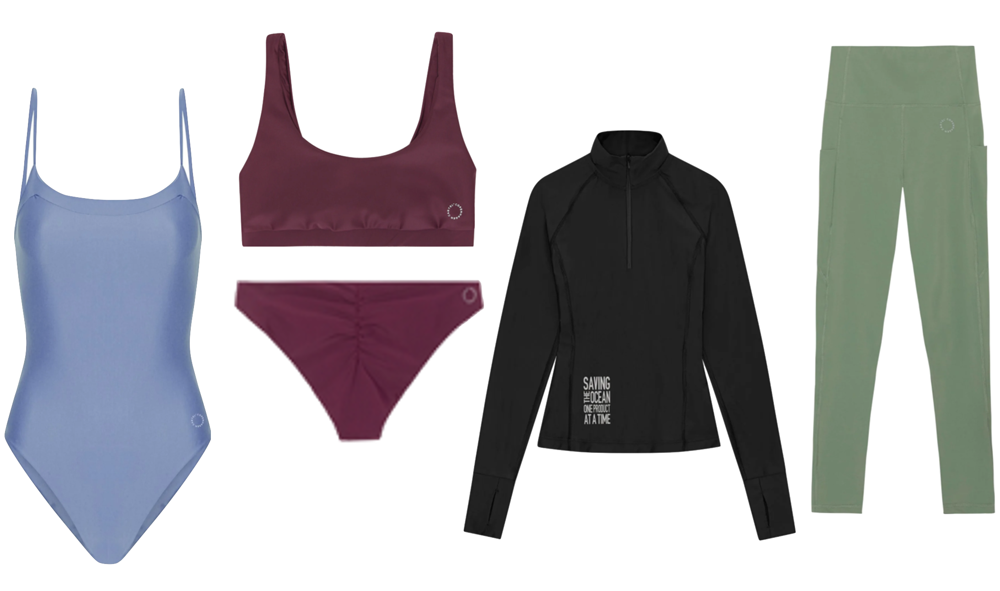

Copenhagen Cartel bekæmper plastik i verdenshavene
Katrine var på ferie på Bali, hvor hun nærmest svømmede rundt i plastikaffald op til halsen. Hun tænkte ”hvorfor er der ikke flere, der gør noget?”.
Med en fortid i iværksættermiljøet og virksomhederne Wolt og Lunar, vidste Katrine, at hendes hjerne tænker i koncepter, positioneringer og branding. Efter hendes ferie til Bali, fik hun blod på tanden til at gøre en forskel for miljøet, da hun nærmest svømmede rundt i Balis have med plastikaffald helt oppe til halsen. Dette gjorde at hun i år 2020 stiftede virksomheden Copenhagen Cartel med en kæmpe passion for klimaet og ønsket om at løse forureningsproblemet. Den ultimative agenda for Katrine var at skabe en platform til, at råbe folk op om omfanget af ressourcespildet og forureningen i verdenshavene. Hun vil bevise, at det er muligt at skabe en sund forretning, uden at det skal være på bekostning af klimaet. Lige nu foregår de fleste af Copenhagen Cartels aktiviteter i Danmark, men blikket er fast rettet mod udlandet, da det har et kæmpe globalt potentiale.

Når man holder Copenhagen Cartels produkter mellem hænderne, og mærker kvaliteten, er det svært at forestille sig, at det engang har haft en fortid som fiskenet. Til gengæld er det ikke svært at genkalde den gode følelse af at have gjort en forskel, hvor ens valg har været med til at fjerne et dødeligt net af plastik, der har været til skade for dyr og planter i havet. Som forbruger har man den unikke magt og mulighed for at skabe en positiv forandring. Hvilket er Katrines mål at fortælle forbrugerne, hvordan deres penge kan være med til at gøre en forskel
Men hvordan forgår produktionen fra plastik til genanvendeligt badetøj egentlig?
Plastikket indsamles fra havene, hvor det sendes ind til fabrikker der steriliserer plastikken. Her knuses, renses og smeltes plastikken til knuste stykker, hvor det laves til små plastfibre. Disse plastfibre strækkes ud til små tråde, som laves om til garn der spinnes og bruges til at lave ECONYL® nylon, som benyttes til den endelige produktion. ECONYL® nylon er ligesom almindelig kvalitetsnylon, let, stærk, elastisk, hurtigttørrende, langtidsholdbart, UV-resistent og nem at vaske. Den eneste forskel er at ECONYL® er skabt af 100 procent regenererede materialer og dermed ikke belaster miljøet i samme grad som ny nylon.
Katrine fandt en ikke-statslig organisation ved navn Healthy Seas, som har speciale i at indsamle net fra havet. Udover dem begyndte hun at samarbejde med en produktion i Italien, som renser nettene, trækker nylonen ud og omdanner det til nye fibre. Her får hun nylonstoffet til hendes badetøjsproduktion. Selve produktionen af hendes kollektioner foregår på Bali. Her bliver stoffet fra producenten i Italien syet til badetøj. Men også her stiller iværksætteren høje krav til en bæredygtig produktion, hvor produktionen skal have filtre på afløbet, så der ikke kommer mikroplastik ud i spildevandet samt der skal være gode arbejdsforhold for medarbejderne. ”Jeg havde behov for at give tilbage til Bali. Det var Bali, der gav mig ideen, og Bali som tog imod mig med åbne arme” fortalte Katrine om hendes valg af sted til hendes produktion.
I dag består Katrines virksomhed af, badetøj, sportstøj og indimellem collaborations med andre virksomheder som besidder samme vision. Deres lækre bæredygtige produkter laves med et tidsløst design, der ikke går af mode. Prisklassen for hendes sportstøj ligger mellem 499-899 kr. hvor badetøjet ligger mellem 499-1199 kr.
Samarbejde om miljøet
Det er ikke kun i udlandet Katrine fik en øjenåbner for, hvor meget forurening der var. Katrine holdte i sommeren 2021 et Clean Up Event, hvor man som individer, brands og virksomheder kunne være med til at gøre en forskel i Danmark. Her gik de sammen på en mission om at rense de danske kyster og strande for plastik, hvor de fik indsamlet knap 2 tons skrald.
Derudover har Katrine også lavet et samarbejde med 1% For The Planet, som er en global bevægelse, som kæmper for, at virksomheder, der tjener på klodens ressourcer, giver tilbage ved at bidrage til arbejdet med at beskytte og bevare den. Gennem deres medlemskab i 1% for the Planet, går 1% af deres årlige omsætning til miljøorganisationer, som aktivt bidrager til at bevare verdenshavene. Blandt andet gennem 1% For The Planet har Copenhagen Cartel skabt et samarbejde med miljøorganisationen SEE Turtes. SEE Turtles er en nonprofit organisation, der beskytter truede havskildpadder over hele verden. Så når man køber et produkt hos Copenhagen Cartel, redder de, på vegne af dig, en havskildpadde baby.